NeurIPS 2026 · Under Review
Who Wrote This Paper? Autonomous Scientific Discovery for 3DGS Research
Anonymous Authors · double-blind submission
GS-Scientist turns a one-line prompt — or no input at all — into a submission-ready 3D Gaussian Splatting manuscript: it reproduces a published baseline, invents an extension, trains and ablates it on real GPUs, and writes the paper. Every reported number is bound to a logged training run.
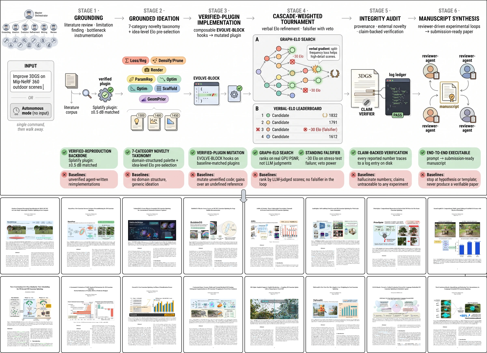
Abstract
Reproducing a published 3DGS paper takes weeks of expert engineering before any extension can be proposed. Prior autonomous-research systems read papers, draft hypotheses, and write code, but suffer from limited template length, executability, and traceability — none has been demonstrated end-to-end in a live computer-vision subfield with intense activity.
GS-Scientist is an autonomous research system for 3D Gaussian Splatting that addresses
these limitations. Given a research prompt, a target-paper URL, or no input at all, it reproduces a published baseline,
proposes an extension, trains and ablates across Mip-NeRF 360 and LLFF, writes the manuscript, and binds every reported
number to a logged training run. Five design choices distinguish it: (i) candidates mutate
plugins from a verified-reproduction backbone matched to published baselines; (ii) a
cascade-weighted Elo tournament across eight islands scores on measured GPU PSNR with verbal-gradient feedback;
(iii) a standing falsifier subtracts Elo on failure, integrating stress-test survival into
selection; (iv) every reported number is bound to a logged training run, and the run cannot
terminate while any claim is unbacked; (v) a seven-category 3DGS taxonomy wraps
EVOLVE-BLOCK markers in domain-aligned scaffolds transferable across 3DGS repositories.
GS-Scientist produces manuscripts that beat their reproduced target by +0.18 to +3.78 dB PSNR, including +3.78 dB on astrophotographic nebula rendering, for which no prior 3DGS method exists. The research cycle compresses from months of graduate-student time to days of mostly autonomous compute.
How it works
From idea to compiled PDF, unattended
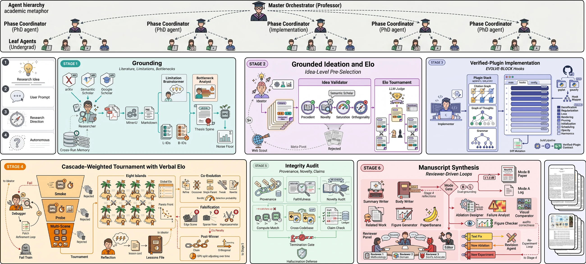
EVOLVE-BLOCK hooks → cascade-weighted tournament with verbal Elo, falsification,
and an eight-island evolutionary search → integrity audit (provenance, novelty, claims) → reviewer-driven manuscript synthesis.
Verified-reproduction backbone
No experiment spawns until the target paper is reproduced within 0.2 dB on our GPUs. Every candidate mutates a plugin already verified to match its published baseline — so every reported gain has a fixed external reference.
Grounded Elo on real GPU PSNR
A cascade-weighted Elo tournament across eight islands ranks candidates on measured ns-train PSNR — never model-judged scores — with ReEvo-style verbal gradients fed back to the ideator on surprising upsets.
In-loop falsification
Every surviving candidate faces three adversarial attacks — edge scene, sparse view, load-bearing hyper-parameter ablation. Each failure subtracts 30 Elo, making stress-test survival a selection signal, not a post-hoc check.
Claim-backed verification
A verifier scans the compiled draft for every numerical claim and searches the ledger for a backing measurement. The run cannot terminate while any claim is unbacked — no hallucinated numbers can ship.
Domain-aligned modification space
Seven 3DGS novelty categories — losses, densification, rasterisation, parameterisation, optimisation, scaffolds, geometric priors — wrap EVOLVE-BLOCK markers that an auto-mapper places in any 3DGS repository.
Two-tier context compaction
A pinned 10k-token summary of the run's anchor facts is written once and never rewritten; later compactions append 4k-token deltas. The professor never forgets what it is trying to beat, across 24–48 h runs.
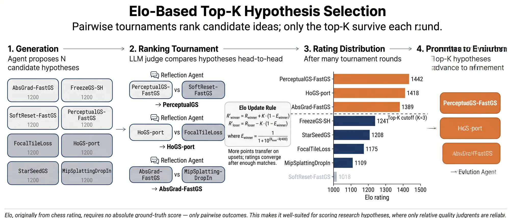
Results
Eleven reproduced targets. Eleven wins.
Each SOTA row below is the target reproduced on our GPUs under the reproduce-first contract — not paraphrased from its paper. The limitation column is the bottleneck-analyst diagnosis that conditioned ideation for that run.
| Setting | Method | Limitation attacked / fix | PSNR ↑ | SSIM ↑ | LPIPS ↓ |
|---|---|---|---|---|---|
| Novel scenes — vanilla 3DGS baseline | |||||
| Nebula 180 fr · 30k it |
3DGS | pinhole ignores OPENCV distortion; SfM yields ≈0 stars | 32.58 | 0.914 | 0.278 |
| Nebula3DGS-v2 (ours) | 3DGS-MCMC sampler + saturation-driven star seeder | 36.36 +3.78 | 0.945 | 0.201 | |
| Bubble 200 fr · 30k it |
3DGS | SH cannot represent thin-film iridescence | 27.40 | 0.857 | 0.337 |
| BubbleGS (ours) | MCMC chassis + Snell/Fresnel two-pass shell renderer | 30.11 +2.71 | 0.906 | 0.224 | |
| Diamond | 3DGS | no refraction model; transparent geometry collapses | 11.60 | — | — |
| DiamondGS (ours) | Snell-law-guided losses + learned transparency mask | 20.17 +8.57 | — | — | |
| Improving published SOTA | |||||
| Mip-NeRF 360 7 sc · 30k it |
FastGS | {0,1} thresholded pixel-count is frequency-blind | 29.12 | 0.858 | 0.217 |
| TileFocalGS (ours) | rank-graded per-tile weights, EMA-smoothed across views | 29.69 +0.57 | 0.869 | 0.194 | |
| Mip-NeRF 360 9 sc · 109 s wall |
FastGS | opacity reset destabilises late refinement | 25.65 | 0.751 | 0.311 |
| FreezeGS (ours) | freeze geometry, disable opacity reset in phase 2 | 26.08 +0.43 | 0.761 | 0.300 | |
| Mip-NeRF 360 7 sc · 50 s wall |
splatfacto | severely under-converged at 50 s | 20.53 | 0.593 | 0.505 |
| View-Curriculum-GS (ours) | first 15 s on 30% most pose-similar views, then full set | 23.36 +2.83 | 0.686 | 0.412 | |
| Mip-NeRF 360 | Opti3DGS | coarse-to-fine schedule under-densifies high-freq regions | 27.71 | 0.841 | 0.209 |
| Opti3DGS-AdaEnt (ours) | adaptive densification threshold + opacity entropy regulariser | 28.05 +0.34 | 0.853 | 0.125 | |
| Mip-NeRF 360 | MSAA-3DGS | multi-sample AA blurs fine contrast | 25.35 | 0.758 | 0.369 |
| MSAA-Bilat (ours) | bilateral-grid contrast recovery | 26.19 +0.84 | 0.791 | 0.293 | |
| Mip-NeRF 360 | GNS | 15%-budget regime sacrifices AA and refinement | 25.97 | 0.891 | 0.095 |
| GNS-AA (ours) | AA rasterisation + denser SfM init + regularisers | 26.15 +0.18 | 0.902 | 0.097 | |
| Mip-NeRF 360 | CompGS | static codebook drift; centroids stale by late training | 28.28 | 0.894 | 0.153 |
| CompGS-EMA (ours) | EMA centroid updates + gradient-based codebook refinement | 28.50 +0.22 | 0.899 | 0.146 | |
| LLFF | DWTGS | wavelet basis under-constrained without high-freq supervision | 18.68 | 0.510 | 0.374 |
| DWTGS-Patch (ours) | patch structure loss + opacity/normal/depth regularisers | 21.09 +2.41 | 0.725 | 0.281 | |
Winners must clear a measured noise-floor gate (Δ ≥ 2σ over ≥3 baseline seeds). Runs that did not clear the gate terminated as research logs, not papers.
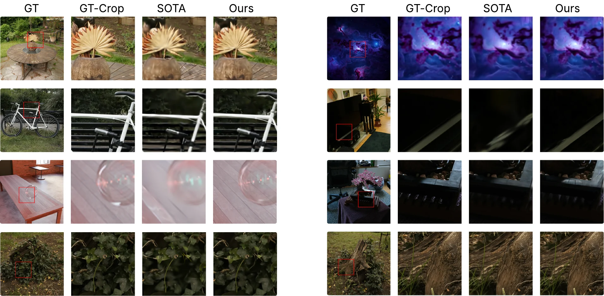
Blind expert study: are the ideas any good?
Following the protocol of Si et al., 10 neural-rendering researchers blind-reviewed 30 style-normalised proposals (20 pipeline, 10 written by PhD students) — 300 reviews total.
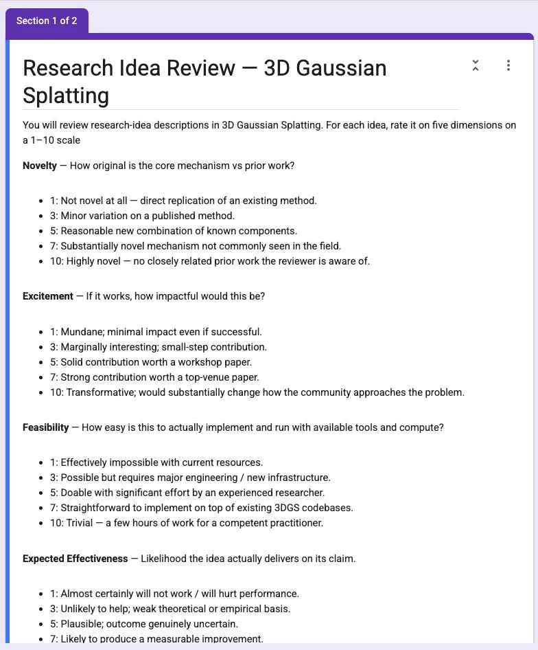
AI ideas scored marginally lower on feasibility (6.05 vs 6.50, n.s.) — replicating the human-study findings of Si et al. on a live 3D-vision subfield.
Months → days
The classical cycle — read, reproduce, extend, train, ablate, write — is bounded by researcher time. GS-Scientist compresses it to days of mostly autonomous compute:
- · 24–48 h wall-clock per run, resumable from a durable ledger after any crash
- · a 4-stage compute cascade filters 23 of 24 candidates before full training — ~150 GPU-days would otherwise be needed per run
- · peer baselines harvested from the target's own tables: O(1) GPU cost instead of O(N) reproductions
The output
16 machine-written manuscripts
Every first page below is a real compiled PDF from one autonomous run — method invented, trained, ablated, figured, written, and revised without human editing. Click any card to read the full paper.
Badges: green — accepted at the CVPR 2026 E2E3D workshop · red — rejected · indigo — headline result of its run.
The reality check
Real reviewers. Real decisions.
Four fully-autonomous manuscripts were submitted to the CVPR 2026 Workshop on End-to-End 3D (E2E3D), following the submission protocol described in the paper (§4.6). Human reviewers scored them like any other submission. Three were accepted as posters; one was rejected.
accepted at a real CVPR 2026 workshop
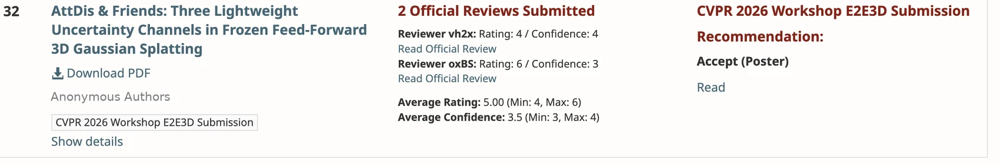
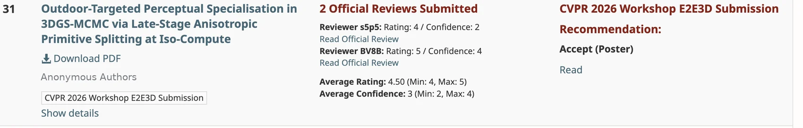
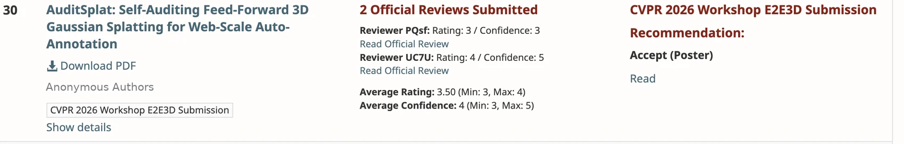
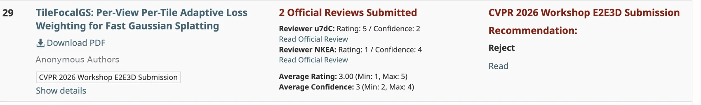
Author names redacted from the OpenReview screenshots for double-blind review. Reviewers scored the papers like any other submission.
Read the full official reviews
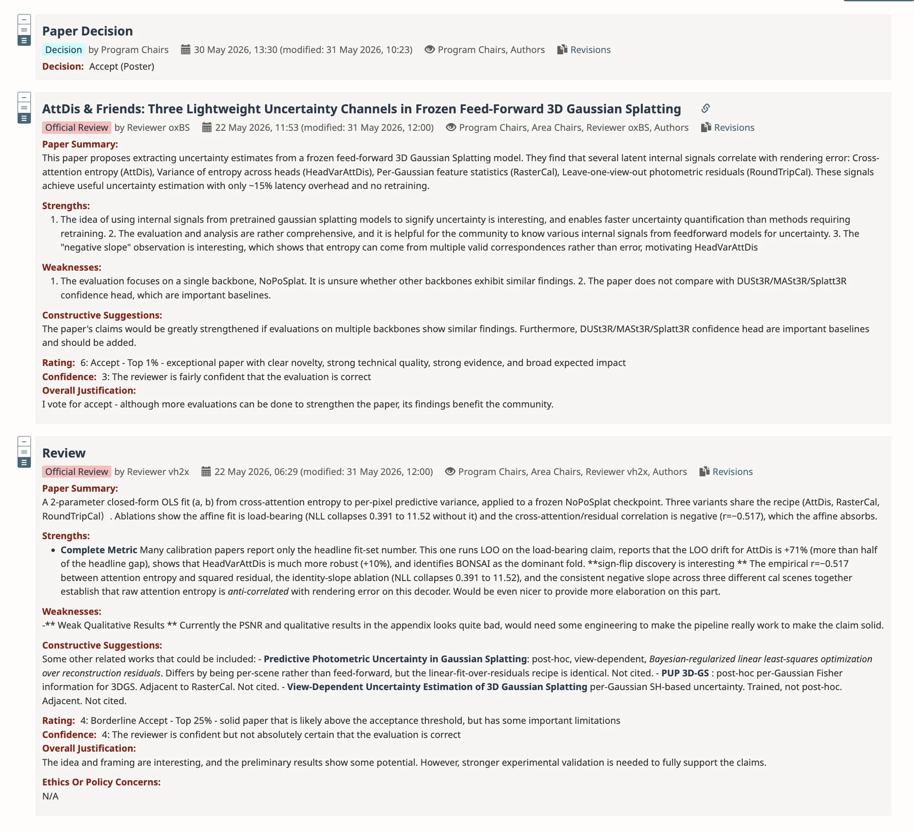
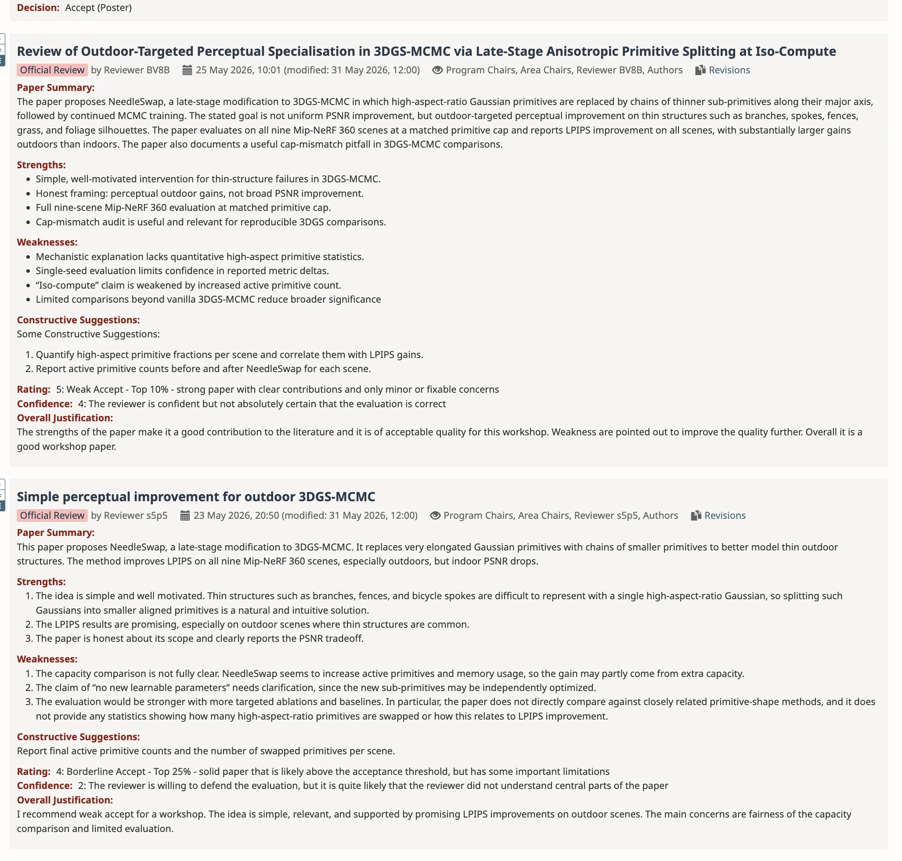
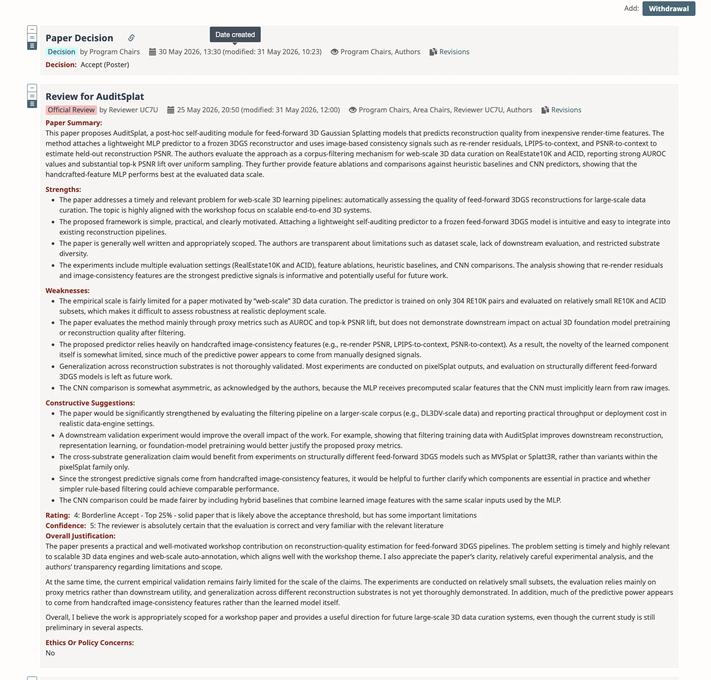
⚖️ Ethics & broader impact
A tool that compresses months to days can flood peer review designed for human pace. We recommend that derivative submissions be labelled and ship their experiment ledger, and we discourage volume submissions. The per-field cost of a verified-reproduction backbone biases capability toward pre-engineered subfields; the integrity audit itself must be audited. GS-Scientist is a research instrument, not a paper-mill backend. See the paper for the full discussion and submission protocol.
BibTeX
@inproceedings{anonymous2026whowrote,
title = {Who Wrote This Paper? Autonomous Scientific
Discovery for 3DGS Research},
author = {Anonymous Authors},
booktitle = {Under review at NeurIPS},
year = {2026},
note = {Code, manuscripts, experiment ledgers, and the
cross-run paper store will be released.}
}